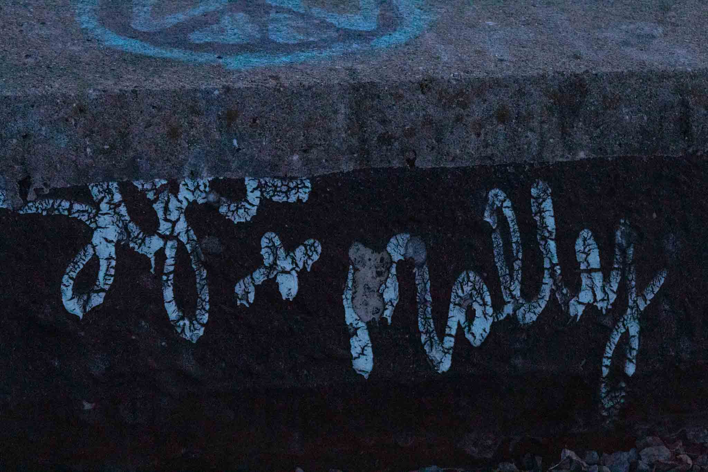

Hi, My name is Sean McLaughlin and I am a Interactive Media Design Student studying at Algonquin College. As as artist, I always want to put 100% into what I am creating, weather it is from photography to coding I want the final product to exceeed what the client wanted from the project. On this website, I want to show my abilities as a creative, if you want to get into contact with me, click on the contact button above. Studying at Algonquin College has been nothing but a posative and informative experience. From the amazing staff and managable work load, it has been the most enjoyable time studying there. I have studied many subjects from Coding to Content managagment and digital graphics. Algonquin has given me all of the nessecary skills to excell in the constantly evolving industry.
Featured Image: "Molly"
When i took this image what I wanted the viewer to focus on is the texture and the environment shown. I feel like those two elements really add alot to the photo

Featured Image: "Long Road"
When I took this picture I was just starting this course and I really wanted to explore and test my abilities as a creative so I had followed this train track for about 2km just to get the right picture.